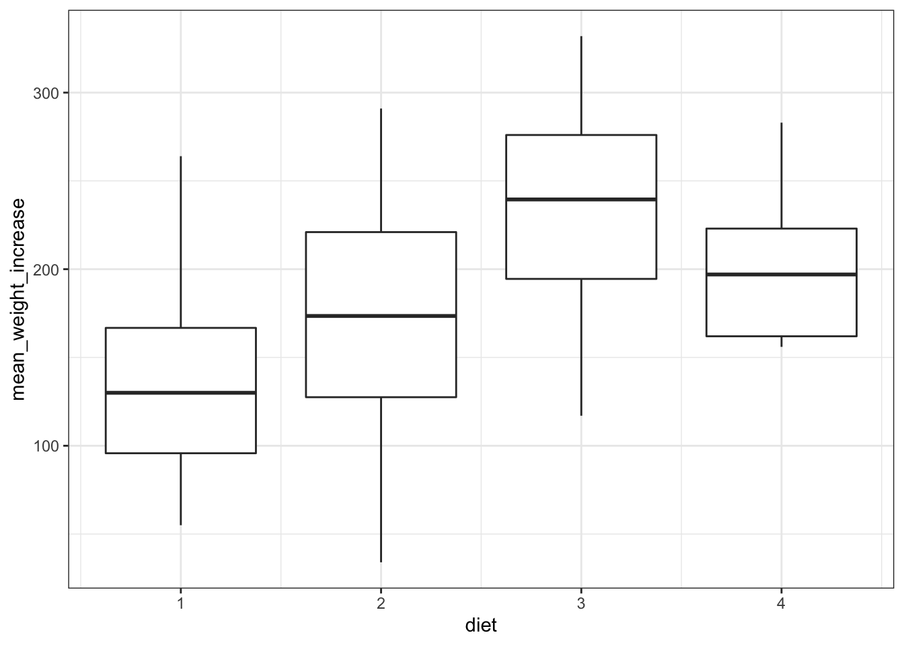
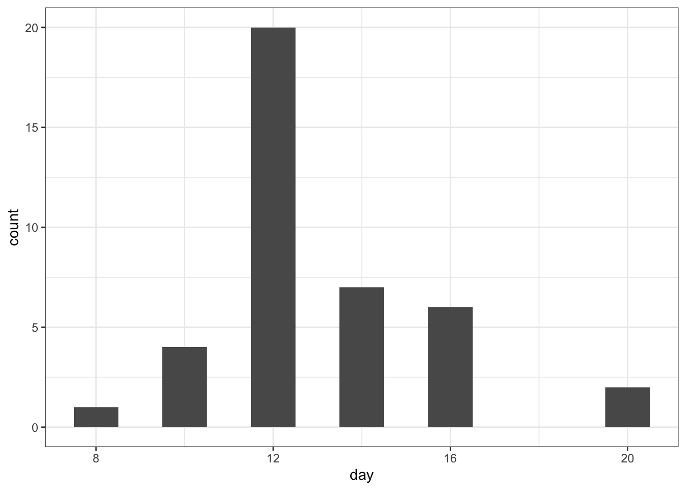
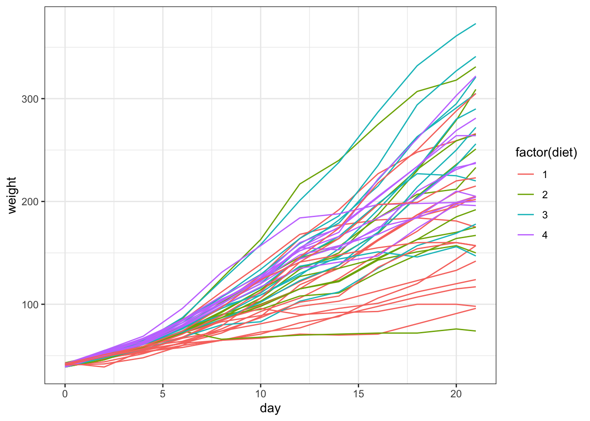
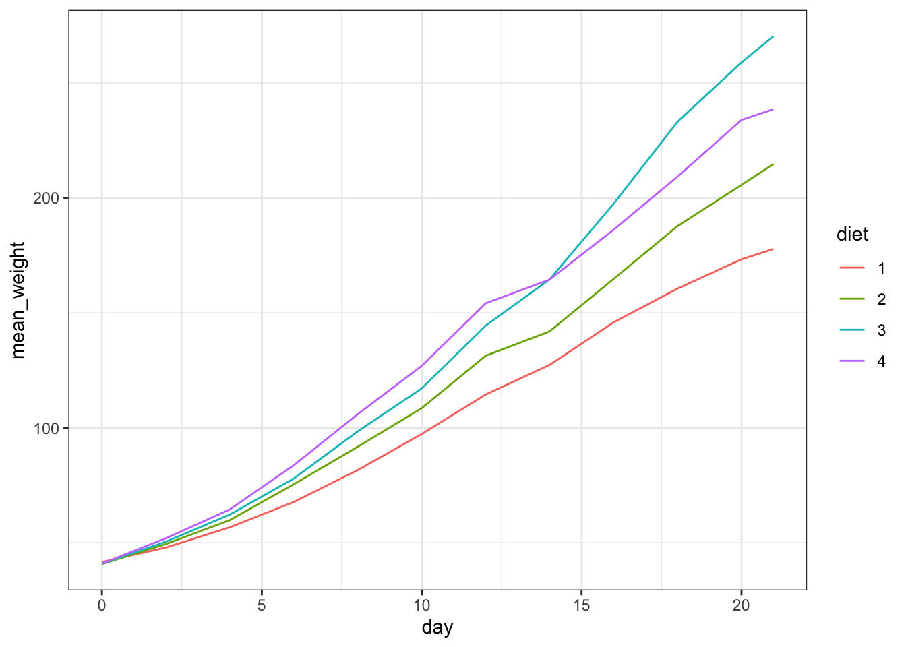

Extended exercise
- Be able to read in multiple data files with a common format
- Combine these in a single data table
- Use the data for exploration and analysis
Libraries and functions
Libraries
library(tidyverse)
library(janitor)Functions
Libraries
Functions
Overview
This practical consists of an extended exercise that will allow you to practice and utilise all of the different skills that we have introduced over the Data Analysis course. It is deliberately designed to replicate a real and realistic piece of work that you might be expected to undertake within your lab. There are two slightly different versions of this exercise:
• The first utilises data that already in a tidy format and merely requires you to work out a way of combining everything using the tools we’ve already covered.
• The second starts with the data stored in a common, but distinctly non-tidy format, and will require much more effort to work out a way to get the data into a usable format. It will require use of functions that we haven’t explicitly introduced and so you will have to use Google to find out what they are and how they work. This is a much more realistic situation, and one that you will encounter in your future work and as such I strongly recommend that you at least have a go at this version. The versions only differ in the skills you require to get the data into R in the first place and both versions ask you to perform the same analyses on the datasets at the end.
Introduction to exercise
An experiment investigated the effect of diet on the early growth of chicks. A number of chicks were fed one of four different diets and their weight (in g) was measured at birth and then at every other day until day 20. A final measurement was made on day 21.
Easy option
The data are stored in text files in a directory entitled data/ext-excercise-easy. There is one text file for each chick. The format of the data in each text file is the same:
• each file contains a tidy table with four columns: ID, Diet, Days, Weight Create a function that that reads in the data from a single file and stores it in a single R object. The function should: • Accept a single argument (a character string of the file location)
Option 1 - tidyverse based
# load libraries
library(tidyverse)Create a function that reads in the data:
# create read function ----
read_chicks <- function(file){
# Read the data in the file
chick_data <- read_delim(file, show_col_types = FALSE)
# Get the chick ID from the file name
chick_name <- file %>% basename() %>% str_remove(".txt")
# Add data to our table
chick_data <- chick_data %>%
mutate(chick_name = chick_name)
# Return the tidy data
return(chick_data)
}We can check that it’s working:
read_chicks("data/ext-exercise-easy/Chick_1.txt")# A tibble: 12 × 5
weight Time Chick Diet chick_name
<dbl> <dbl> <dbl> <dbl> <chr>
1 42 0 1 1 Chick_1
2 51 2 1 1 Chick_1
3 59 4 1 1 Chick_1
4 64 6 1 1 Chick_1
5 76 8 1 1 Chick_1
6 93 10 1 1 Chick_1
7 106 12 1 1 Chick_1
8 125 14 1 1 Chick_1
9 149 16 1 1 Chick_1
10 171 18 1 1 Chick_1
11 199 20 1 1 Chick_1
12 205 21 1 1 Chick_1 Next, we need to get all the file names:
file_list_easy <- list.files("data/ext-exercise-easy/", full.names = TRUE)We can check the output with:
head(file_list_easy)[1] "data/ext-exercise-easy//Chick_1.txt"
[2] "data/ext-exercise-easy//Chick_10.txt"
[3] "data/ext-exercise-easy//Chick_11.txt"
[4] "data/ext-exercise-easy//Chick_12.txt"
[5] "data/ext-exercise-easy//Chick_13.txt"
[6] "data/ext-exercise-easy//Chick_14.txt"Lastly, we need to combine the two: for each file in the file_list we need to apply the read_chicks() function.
# create an empty vector list that can hold our data
chicks <- vector("list", length = length(file_list_easy))
# loop through the files and add to the list
for(i in seq_along(file_list_easy)){
chicks[[i]] <- read_chicks(file_list_easy[i])
}We can inspect the chicks object:
head(chicks)[[1]]
# A tibble: 12 × 5
weight Time Chick Diet chick_name
<dbl> <dbl> <dbl> <dbl> <chr>
1 42 0 1 1 Chick_1
2 51 2 1 1 Chick_1
3 59 4 1 1 Chick_1
4 64 6 1 1 Chick_1
5 76 8 1 1 Chick_1
6 93 10 1 1 Chick_1
7 106 12 1 1 Chick_1
8 125 14 1 1 Chick_1
9 149 16 1 1 Chick_1
10 171 18 1 1 Chick_1
11 199 20 1 1 Chick_1
12 205 21 1 1 Chick_1
[[2]]
# A tibble: 12 × 5
weight Time Chick Diet chick_name
<dbl> <dbl> <dbl> <dbl> <chr>
1 41 0 10 1 Chick_10
2 44 2 10 1 Chick_10
3 52 4 10 1 Chick_10
4 63 6 10 1 Chick_10
5 74 8 10 1 Chick_10
6 81 10 10 1 Chick_10
7 89 12 10 1 Chick_10
8 96 14 10 1 Chick_10
9 101 16 10 1 Chick_10
10 112 18 10 1 Chick_10
11 120 20 10 1 Chick_10
12 124 21 10 1 Chick_10
[[3]]
# A tibble: 12 × 5
weight Time Chick Diet chick_name
<dbl> <dbl> <dbl> <dbl> <chr>
1 43 0 11 1 Chick_11
2 51 2 11 1 Chick_11
3 63 4 11 1 Chick_11
4 84 6 11 1 Chick_11
5 112 8 11 1 Chick_11
6 139 10 11 1 Chick_11
7 168 12 11 1 Chick_11
8 177 14 11 1 Chick_11
9 182 16 11 1 Chick_11
10 184 18 11 1 Chick_11
11 181 20 11 1 Chick_11
12 175 21 11 1 Chick_11
[[4]]
# A tibble: 12 × 5
weight Time Chick Diet chick_name
<dbl> <dbl> <dbl> <dbl> <chr>
1 41 0 12 1 Chick_12
2 49 2 12 1 Chick_12
3 56 4 12 1 Chick_12
4 62 6 12 1 Chick_12
5 72 8 12 1 Chick_12
6 88 10 12 1 Chick_12
7 119 12 12 1 Chick_12
8 135 14 12 1 Chick_12
9 162 16 12 1 Chick_12
10 185 18 12 1 Chick_12
11 195 20 12 1 Chick_12
12 205 21 12 1 Chick_12
[[5]]
# A tibble: 12 × 5
weight Time Chick Diet chick_name
<dbl> <dbl> <dbl> <dbl> <chr>
1 41 0 13 1 Chick_13
2 48 2 13 1 Chick_13
3 53 4 13 1 Chick_13
4 60 6 13 1 Chick_13
5 65 8 13 1 Chick_13
6 67 10 13 1 Chick_13
7 71 12 13 1 Chick_13
8 70 14 13 1 Chick_13
9 71 16 13 1 Chick_13
10 81 18 13 1 Chick_13
11 91 20 13 1 Chick_13
12 96 21 13 1 Chick_13
[[6]]
# A tibble: 12 × 5
weight Time Chick Diet chick_name
<dbl> <dbl> <dbl> <dbl> <chr>
1 41 0 14 1 Chick_14
2 49 2 14 1 Chick_14
3 62 4 14 1 Chick_14
4 79 6 14 1 Chick_14
5 101 8 14 1 Chick_14
6 128 10 14 1 Chick_14
7 164 12 14 1 Chick_14
8 192 14 14 1 Chick_14
9 227 16 14 1 Chick_14
10 248 18 14 1 Chick_14
11 259 20 14 1 Chick_14
12 266 21 14 1 Chick_14 This gives us a list with 50 data frames. We can combine these into one large table by doing the following:
all_chicks <- bind_rows(chicks)We can inspect the object:
head(all_chicks)# A tibble: 6 × 5
weight Time Chick Diet chick_name
<dbl> <dbl> <dbl> <dbl> <chr>
1 42 0 1 1 Chick_1
2 51 2 1 1 Chick_1
3 59 4 1 1 Chick_1
4 64 6 1 1 Chick_1
5 76 8 1 1 Chick_1
6 93 10 1 1 Chick_1 To finalise things, we tidy up some of the column names. We can do this manually (with rename() for example) or just use janitor::clean_names() function (you will have to install and load the janitor package for this). We also reorder the columns:
library(janitor)
Attaching package: 'janitor'The following object is masked from 'package:rstatix':
make_clean_namesThe following objects are masked from 'package:stats':
chisq.test, fisher.testall_chicks %>%
clean_names()# A tibble: 578 × 5
weight time chick diet chick_name
<dbl> <dbl> <dbl> <dbl> <chr>
1 42 0 1 1 Chick_1
2 51 2 1 1 Chick_1
3 59 4 1 1 Chick_1
4 64 6 1 1 Chick_1
5 76 8 1 1 Chick_1
6 93 10 1 1 Chick_1
7 106 12 1 1 Chick_1
8 125 14 1 1 Chick_1
9 149 16 1 1 Chick_1
10 171 18 1 1 Chick_1
# … with 568 more rowsThat looks better, so let’s update our object:
all_chicks <- all_chicks %>%
clean_names()Challenging option
The data are stored in text files in a directory entitled data/ext-excerise-chal. There is one text file for each chick. The format of the data in each text file is the same:
• each file contains information on an individual chick, with Diet, Day and Weight information. The ID of the chick is encoded in the file name. Create a function that that reads in the data from a single file and stores it in a single R object. The function should: • Accept a single argument (a character string of the file location)
Option 1 - tidyverse based
First, if we open one of the files then we can see that the files are composed of the following:
- Diet; e.g.
Diet: 1 - empty line
- a tidy table with Day, Weight columns, space separated
The chick ID is encoded in the filename, so we need to extract that information as well.
First, we create a function that reads in the data:
# create read function ----
read_chicks <- function(file){
# Read the data in the file
chick_data <- read_delim(file, delim = " ", skip = 1)
# Get the diet information
chick_diet <- read_delim(file, delim = " ",
col_names = FALSE,
n_max = 1) %>%
mutate(diet = parse_number(as.character(.))) %>%
select(diet) %>% pull()
# Get the chick ID from the file name
chick_name <- file %>% basename() %>% str_remove(".txt")
# Add data to our table
chick_data <- chick_data %>%
mutate(chick_name = chick_name,
chick_diet = chick_diet)
# Return the tidy data
return(chick_data)
}We can see if this works:
read_chicks("data/ext-exercise-chal/Chick_1.txt")Rows: 12 Columns: 2
── Column specification ────────────────────────────────────────────────────────
Delimiter: " "
dbl (2): Day, Weight
ℹ Use `spec()` to retrieve the full column specification for this data.
ℹ Specify the column types or set `show_col_types = FALSE` to quiet this message.
Rows: 1 Columns: 1
── Column specification ────────────────────────────────────────────────────────
Delimiter: " "
chr (1): X1
ℹ Use `spec()` to retrieve the full column specification for this data.
ℹ Specify the column types or set `show_col_types = FALSE` to quiet this message.# A tibble: 12 × 4
Day Weight chick_name chick_diet
<dbl> <dbl> <chr> <dbl>
1 0 42 Chick_1 1
2 2 51 Chick_1 1
3 4 59 Chick_1 1
4 6 64 Chick_1 1
5 8 76 Chick_1 1
6 10 93 Chick_1 1
7 12 106 Chick_1 1
8 14 125 Chick_1 1
9 16 149 Chick_1 1
10 18 171 Chick_1 1
11 20 199 Chick_1 1
12 21 205 Chick_1 1All good. Next, we need to get the list of files that we want to loop over:
file_list_chal <- list.files("data/ext-exercise-chal/",
full.names = TRUE)Then we combine the two, we loop over each item in the file list, applying the read_chicks() function we created:
chal_chicks <- vector("list", length = length(file_list_chal))
# loop through the files and add to the list
for(i in seq_along(file_list_chal)){
chal_chicks[[i]] <- read_chicks(file_list_chal[i])
}Lastly, we combine the 50 lists into one large data frame:
all_chicks <- bind_rows(chal_chicks)We can inspect the object as follows:
head(all_chicks)# A tibble: 6 × 4
Day Weight chick_name chick_diet
<dbl> <dbl> <chr> <dbl>
1 0 42 Chick_1 1
2 2 51 Chick_1 1
3 4 59 Chick_1 1
4 6 64 Chick_1 1
5 8 76 Chick_1 1
6 10 93 Chick_1 1Again, to finalise things, we tidy up some of the column names. We can do this manually (with rename() for example) or just use janitor::clean_names() function (you will have to install and load the janitor package for this). We also reorder the columns:
library(janitor)
all_chicks <- all_chicks %>%
clean_names()Option 2 - tidyverse based
Get all the file names:
list_of_files <- list.files("data/ext-exercise-chal/",
full.names = TRUE)Create a table that can hold all the information in the correct format:
all_chicks <- tibble(
Day = as.numeric(),
Weight = as.numeric(),
chick_id = as.character(),
diet = as.numeric()
)For each file in list_of_files, do the following:
- read the data
- get the chick ID
- get the diet info
- create a table containing the individual data
- merge that with the existing data
for(i in list_of_files){
file <- i
# 1: read the data
chick <- read_delim(file, skip = 2)
# 2: get the chick ID
chick_id <- file %>%
basename() %>%
str_remove(".txt")
# 3: get the diet info
diet <- read.table(file, nrows = 1) %>%
mutate(diet = str_remove(V1, "Diet:")) %>%
select(-V1) %>%
pull() %>%
as.numeric()
# 4: create a table containing the individual data
chick <- chick %>%
mutate(chick_id = chick_id,
diet = diet)
# 5. merge that with the existing data
all_chicks <- bind_rows(all_chicks, chick)
}head(all_chicks)# A tibble: 6 × 4
Day Weight chick_id diet
<dbl> <dbl> <chr> <dbl>
1 0 42 Chick_1 1
2 2 51 Chick_1 1
3 4 59 Chick_1 1
4 6 64 Chick_1 1
5 8 76 Chick_1 1
6 10 93 Chick_1 1Again, to finalise things, we tidy up some of the column names. We can do this manually (with rename() for example) or just use janitor::clean_names() function (you will have to install and load the janitor package for this). We also reorder the columns:
library(janitor)
all_chicks <- all_chicks %>%
clean_names() %>%
select(chick_id, diet, day, weight)Option 3 - base R based
We can following the same steps if we wanted to only use base R. We would just have to extract the data slightly differently. For example, testing this on the first file:
diet_data <- read.table("data/ext-exercise-chal/Chick_1.txt",
nrows = 1)head(diet_data) V1
1 Diet:1We could extract the diet information as follows:
diet <- as.numeric(unlist(strsplit(diet_data$V1, split = "Diet:"))[2])diet[1] 1The rest of the workflow is then the same as for Option 2 - tidyverse based.
Data exploration and querying
Now that we have a complete data set, we can actually use the data and answer some questions.
Let’s assume that we stored our data in an object called all_chicks, with the following columns:
chick_id, character column with chick IDdiet, numeric column with diet typeday, numeric column with day of experimentweight, numeric column with weight measurement
First, we perform a couple of sanity checks:
Let’s look at the structure our data:
all_chicks %>% head()# A tibble: 6 × 4
chick_id diet day weight
<chr> <dbl> <dbl> <dbl>
1 Chick_1 1 0 42
2 Chick_1 1 2 51
3 Chick_1 1 4 59
4 Chick_1 1 6 64
5 Chick_1 1 8 76
6 Chick_1 1 10 93That looks good.
We are expecting data for 50 chicks, so let’s check that:
all_chicks %>%
distinct(chick_id) %>%
count()# A tibble: 1 × 1
n
<int>
1 50Houston, we have 50 chicks!
Next, how many discrete days do we have in our data?
# how many days are in the data
all_chicks %>%
distinct(day)# A tibble: 12 × 1
day
<dbl>
1 0
2 2
3 4
4 6
5 8
6 10
7 12
8 14
9 16
10 18
11 20
12 21Turns out that there are 12 time points, almost in intervals of 2 days…
Exercise: surviving chicks
How many chicks died before the end of the experiment? Create a separate data frame called survived_chicks that only includes the data from surviving chicks.
To determine which chicks survived, we need to check on a chick-by-chick basis it survived to the maximum duration of the experiment.
In this case, the experiment runs until 21 days, so one way we can tackle this is by creating a new column that contains information on it’s survival status (TRUE or FALSE):
survived_chicks <- all_chicks %>%
# look on a chick-by-chick basis
group_by(chick_id) %>%
# create a new column `survived`
# if there is a measurement in day 21, state TRUE
# otherwise FALSE
mutate(survived = if_else(max(day) == 21, TRUE, FALSE)) %>%
# filter out the poor chicks that didn't make it
filter(survived == TRUE) %>%
# remove grouping
ungroup()Right, let’s see how many chicks made it:
survived_chicks %>%
# get each unique chick
distinct(chick_id) %>%
count()# A tibble: 1 × 1
n
<int>
1 45Great, quite a few chicks survived, 45 altogether.
Exercise: data exploration
Do get a better sense of our data, we are going to do some data exploration. I’d like you to do the following:
- Calculate the mean increase in weight (end weight minus birth weight) for all of the surviving chicks.
- Calculate the mean increase in weight for each subset of surviving chicks depending on their diet.
- Produce box plots of increases in weight for the surviving chicks on each diet (i.e. four box plots side by side)
- Find the first recorded time that each surviving chick weighed more than 130g and produce a histogram of these times. (Remove from the analysis any chicks that didn’t ever make this weight)
- Produce a line plot which shows the weight of each chick against time. Colour the lines differently depending on the diet of each chick.
- Calculate an average growth curve for each diet (i.e. calculate the average of the weights of each chick at each time point) and produce a single plot showing the four average growth curves.
- mean increase in weight surviving chicks
survived_chicks %>%
group_by(chick_id) %>%
summarise(mean_weight_increase =
mean(max(weight - min(weight)))) %>%
ungroup()# A tibble: 45 × 2
chick_id mean_weight_increase
<chr> <dbl>
1 Chick_1 163
2 Chick_10 83
3 Chick_11 141
4 Chick_12 164
5 Chick_13 55
6 Chick_14 225
7 Chick_17 100
8 Chick_19 114
9 Chick_2 175
10 Chick_20 76
# … with 35 more rows- mean weight increase surviving chick by diet
survived_chicks %>%
group_by(chick_id, diet) %>%
# get average weight increase by chick
summarise(mean_weight_increase =
mean(max(weight - min(weight)))) %>%
# group by data
group_by(diet) %>%
# calculate the average increase across the diets
summarise(increase_by_diet = mean(mean_weight_increase)) %>%
ungroup()`summarise()` has grouped output by 'chick_id'. You can override using the
`.groups` argument.# A tibble: 4 × 2
diet increase_by_diet
<dbl> <dbl>
1 1 138.
2 2 175.
3 3 231.
4 4 198.- box plots of increases in weight for the surviving chicks on each diet (i.e. four box plots side by side)
There are multiple ways of doing this, but I’m using the pipe here to start with the original survived chicks data and work from there. Note that the diet column is actually numerical, so to plot the diets as a group, we need to either specify the grouping in ggplot() with group = diet or convert the x-values to a factor with x = factor(diet)
survived_chicks %>%
group_by(chick_id, diet) %>%
# get average weight increase by chick
summarise(mean_weight_increase =
mean(max(weight - min(weight)))) %>%
ungroup() %>%
ggplot(aes(x = diet, y = mean_weight_increase,
group = diet)) +
geom_boxplot()`summarise()` has grouped output by 'chick_id'. You can override using the
`.groups` argument.
- Find the first recorded time that each surviving chick weighed more than 130g and produce a histogram of these times. (Remove from the analysis any chicks that didn’t ever make this weight)
Again, there are multiple ways of doing this, but here we go:
survived_chicks %>%
# perform these next steps on a
# chick-by-chick basis
group_by(chick_id) %>%
# filter out the data where
# weight > 130
filter(weight > 130) %>%
# arrange by day, so that the first day
# where weight > 130 is on top
arrange(day) %>%
# slice the data so only the first
# value per chick_id is kept
slice(1) %>%
ungroup() %>%
# plot our data
ggplot(aes(x = day)) +
# change the binwidth to 1, so
# we get the counts per day
geom_histogram(binwidth = 1)
- line plot of
weightover time for each chick, coloured bydiet
ggplot(survived_chicks,
aes(x = day, y = weight, colour = factor(diet))) +
geom_line(aes(group = chick_id))
- average growth curve for each diet
survived_chicks %>%
mutate(diet = factor(diet)) %>%
group_by(diet, day) %>%
summarise(mean_weight = mean(weight)) %>%
ungroup() %>%
ggplot(aes(x = day, y = mean_weight,
colour = diet, group = diet)) +
geom_line()`summarise()` has grouped output by 'diet'. You can override using the
`.groups` argument.
Exercise: data manipulation
Sometimes it’s useful to save some of these operations into a new data frame. To practice this, we are going to do the following:
Construct a data frame with 6 columns and write it to a text file.
- The first column should contain the original times.
- The second column should contain the mean weights of all of the chicks on all diets (who survived).
- The third through sixth columns should contain average weights of the chick on each diet.
There are different ways of approaching this. Here I am calculating the average weight for each time point. Then I calculate the average weight per diet. Lastly, I combine that information.
weight_per_day <- survived_chicks %>%
group_by(day) %>%
summarise(mean_weight = mean(weight)) %>%
ungroup()
head(weight_per_day)# A tibble: 6 × 2
day mean_weight
<dbl> <dbl>
1 0 41.1
2 2 49.6
3 4 60.2
4 6 74.9
5 8 92.4
6 10 110. weight_per_diet <- survived_chicks %>%
group_by(day, diet) %>%
summarise(mean_weight = mean(weight)) %>%
ungroup()`summarise()` has grouped output by 'day'. You can override using the `.groups`
argument.head(weight_per_diet)# A tibble: 6 × 3
day diet mean_weight
<dbl> <dbl> <dbl>
1 0 1 41.6
2 0 2 40.7
3 0 3 40.8
4 0 4 40.9
5 2 1 47.9
6 2 2 49.4We need to pivot the weight_per_diet values. We also add a prefix to the names, with names_prefix = "diet_", so that our column names do not contain just a number.
weight_per_diet_wide <- weight_per_diet %>%
pivot_wider(names_from = diet,
values_from = mean_weight,
names_prefix = "diet_")
head(weight_per_diet_wide)# A tibble: 6 × 5
day diet_1 diet_2 diet_3 diet_4
<dbl> <dbl> <dbl> <dbl> <dbl>
1 0 41.6 40.7 40.8 40.9
2 2 47.9 49.4 50.4 51.9
3 4 56.7 59.8 62.2 64.4
4 6 67.7 75.4 77.9 83.7
5 8 81.6 91.7 98.4 106.
6 10 97.2 108. 117. 127. That works, so now we can combine this, for example through a join:
combined_weights <- left_join(weight_per_diet_wide, weight_per_day, by = "day")
head(combined_weights)# A tibble: 6 × 6
day diet_1 diet_2 diet_3 diet_4 mean_weight
<dbl> <dbl> <dbl> <dbl> <dbl> <dbl>
1 0 41.6 40.7 40.8 40.9 41.1
2 2 47.9 49.4 50.4 51.9 49.6
3 4 56.7 59.8 62.2 64.4 60.2
4 6 67.7 75.4 77.9 83.7 74.9
5 8 81.6 91.7 98.4 106. 92.4
6 10 97.2 108. 117. 127. 110. We can write that to file, if we wanted to:
write_csv(combined_weights, file = "data/combined_weights.csv")Key points
- We can use
forloops to reiterate over a process - We can create our own functions to perform a common set of operations
- Combining data allows us to explore trends in data sets and look for patterns